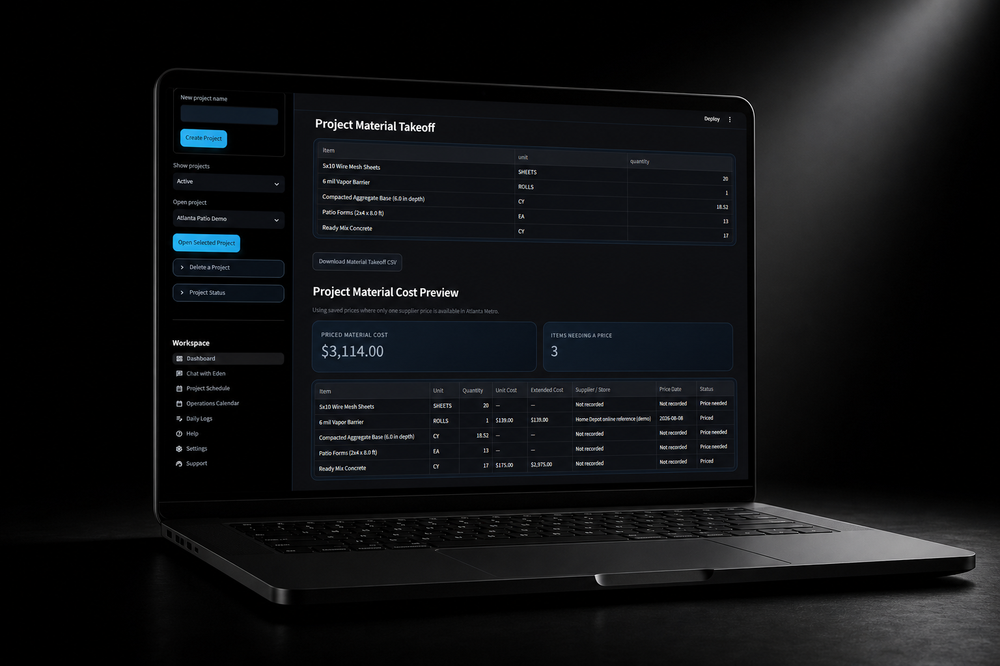

Built for contractors
Practical tools for real jobs.
Eden 1.0 · Construction operations
Construction made easier.
Eden brings estimating, material pricing, project planning, and customer proposals into one focused construction workspace.
Practical tools for real jobs.
Takeoffs without spreadsheet chaos.
Price the work before it starts.

Built for contractors and construction teams who want a clearer way to run the job.
Eden 1.0
Describe the work in plain language. Eden collects missing measurements, builds the estimate, and saves it to the correct project.
Build material takeoffs for concrete, framing, roofing, drywall, insulation, paint, plumbing, electrical, HVAC, and specialty work.
Track supplier prices, regional pricing, and missing costs. Eden calculates material totals from the quantities in your takeoff.
Add labor, overhead, and profit, then create internal cost sheets, customer proposals, change orders, and material CSV exports.
Organize the project into phases, assign tasks to the right phase, plan labor, and keep dates visible in the project schedule and calendar.
Keep estimates, customer details, daily logs, jobsite photos, documents, and project activity together—backed up to your cloud workspace.
A clearer workflow
Eden 1.0 · Construction operations
For contractors who need clearer estimates, dependable pricing, organized project records, and customer-ready documents.
14-day free trial. Cancel anytime.
Included in Eden 1.0
Coming in a future Eden 1.0 update
These collaboration tools are planned for a later release. They are not part of the current subscription promise.
Keep project conversations, questions, decisions, and Eden’s summaries connected to the correct job.
Invite foremen and employees to share updates, photos, material needs, and daily work notes.
Give customers a focused place for updates, approvals, and simple project questions.
A focused mobile app for chatting with Eden, sending field updates, and receiving project alerts—not a crowded desktop app on a phone.
Future vision · Eden 2.0
Eden 2.0 is the long-term vision: an AI-powered construction operations assistant that helps contractors spot what needs attention before it becomes a problem.
Connect weather, schedules, and active work so Eden can surface useful jobsite reminders and risks.
Turn project information into clear guidance around deliveries, sequencing, material needs, and next steps.
Bring job updates, decisions, communication, and action items into one operating picture.
A future voice-enabled office companion built for quick questions and hands-free project awareness.
Eden 2.0 is future product direction. These capabilities are not included in Eden 1.0 today.
Eden 1.0
Start with 14 days free. Build a real estimate, review the costs, and create the customer proposal before deciding whether Eden belongs in your business.
Our mission
Construction is demanding enough. Eden is being built to make estimating, pricing, project information, and customer communication easier to manage in one focused system.
Account & billing
Your secure account area lets you start a trial, update billing, or cancel through Stripe. Eden stays focused on the construction work.